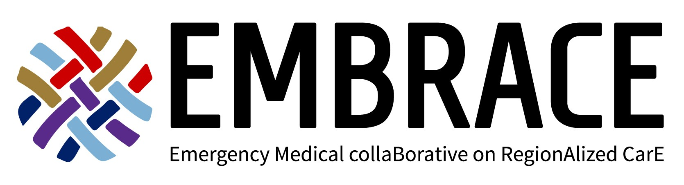

Multi-institutional research collaborative
EMBRACE is a research project aiming to understand and improve how communities organize emergency care for acute illness and injury — from the moment 911 is called to hospital discharge and beyond.
Explore Our Research →
Our mission: To study and improve regional systems of care for acute illness and injury through rigorous, community-engaged, interdisciplinary research.
About EMBRACE
The Emergency Medical collaBorative on RegionAlized CarE (EMBRACE) is a multi-institutional research project dedicated to understanding how regional systems of emergency care are organized — and how they can be made more equitable, efficient, and effective for all patients.
Our work spans the full arc of acute care: from emergency medical services and prehospital triage to hospital-based treatment and community recovery. We use a mix of qualitative methods, simulation modeling, and population-level data analysis to generate insights that can drive real-world change.
EMBRACE is led by Principal Investigator Mehul Patel, PhD, research faculty in the Department of Emergency Medicine at Duke University.
Funding
Funding for EMBRACE is provided in part by the NIH's National Institute on Minority Health and Health Disparities through Grant #s R01MD018031 and R21MD019082.
Why It Matters
When someone suffers a stroke, traumatic injury, or life-threatening infection, outcomes depend not just on clinical skill — but on the entire system that surrounds them: where they live, which ambulance responds, which hospital they're taken to, and how quickly the right care reaches them.
These regional systems of care are complex, often inequitable, and poorly understood. EMBRACE exists to change that — through research that centers patient and community voices alongside rigorous data science.
Our findings inform EMS protocols, hospital triage policies, and health equity initiatives across North Carolina and beyond.
Research Areas
Understanding how regional EMS systems triage and transport stroke patients — and how to reduce time to treatment for all communities.
See projects →Examining how trauma systems are organized and how transport decisions affect outcomes for patients with serious injuries.
See projects →Investigating prehospital recognition and regionalized treatment pathways for patients presenting with sepsis and severe infection.
See projects →Get Involved
We are looking for clinicians, healthcare administrators, and community members to inform and disseminate our research through engagement, participation, and partnership.
Connect with EMBRACE →